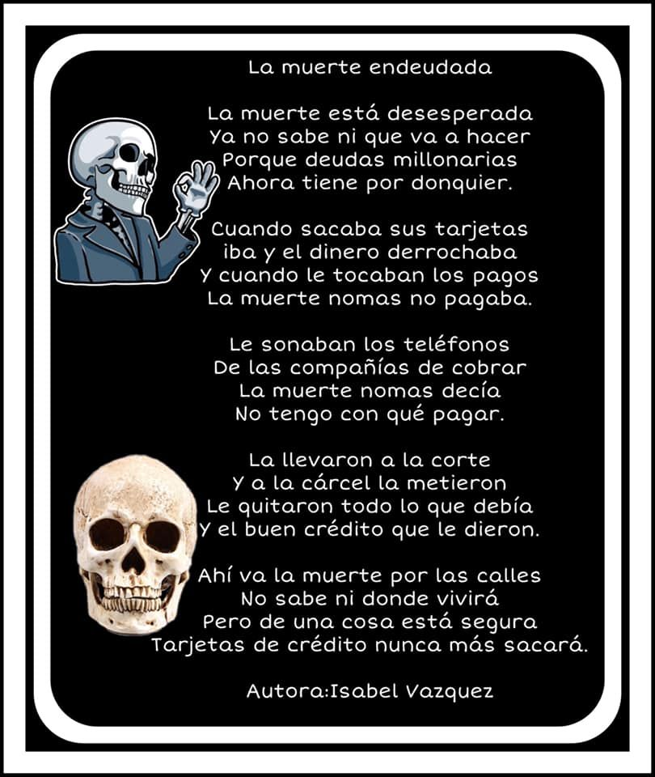
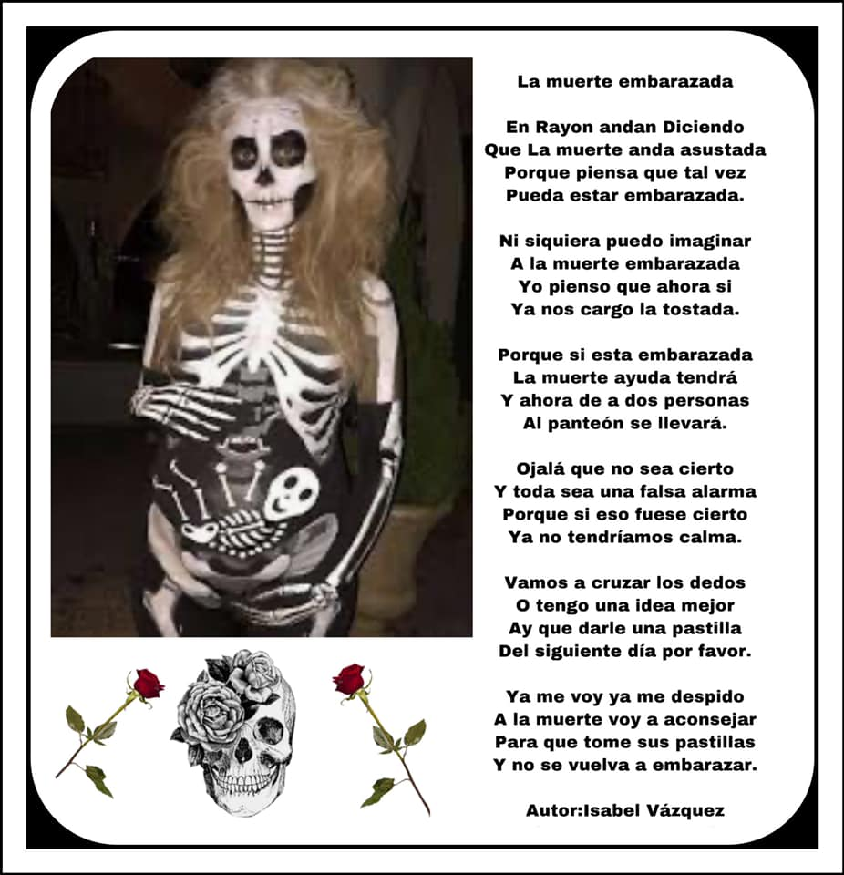
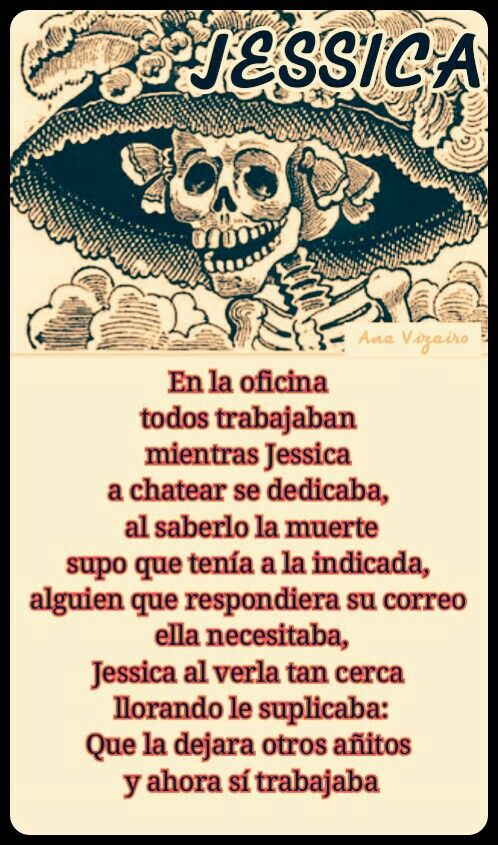
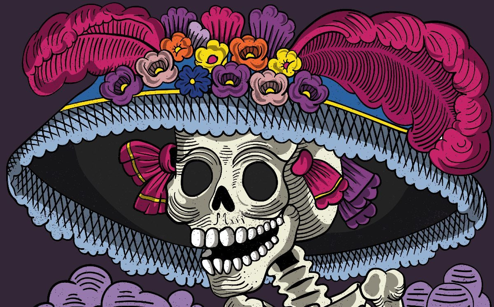

elementos de la ofrenda

veladoras

calaveritas de azucar

flores de cempasuchil

pan de muerto

frutas

papel picado

simbologia

¿Qué es el Día de Muertos?
El Día de Muertos es una festividad mexicana en la que se honra a los seres queridos fallecidos.
Se cree que los espíritus de los difuntos regresan al mundo de los vivos durante los días 1 y 2 de noviembre de cada año.
Es una celebración que combina elementos de las tradiciones indígenas mesoamericanas con prácticas y creencias católicas
.
Se trata de una conmemoración alegre, que festeja la continuidad de la vida a través de rituales y ofrendas. En ella,
se crean altares coloridos, adornados con fotos, flores, velas y aquellos alimentos que eran apreciados por los difuntos.
Las fechas coinciden con las fiestas católicas del Día de Todos los Santos y el Día de los Fieles Difuntos.
Si bien los días precisos son el 1 y 2 de noviembre, las celebraciones del Día de Muertos pueden durar hasta una semana.
La riqueza cultural de esta tradición es tal que la Unesco la inscribió en la Lista Representativa del Patrimonio Cultural
Inmaterial de la Humanidad en 2008. Es una de las tradiciones más famosas y visitadas de México, y ha inspirado numerosas
obras documentales y de ficción.
El Día de Muertos es una festividad que surge del sincretismo entre rituales prehispánicos de México y celebraciones católicas
europeas, consolidándose como una tradición cultural única.
Raíces prehispánicas
Antes de la llegada de los españoles, las culturas indígenas de México, como los aztecas, mayas y purépechas, realizaban rituales
para honrar a los muertos, aunque en fechas distintas a las actuales. La muerte se concebía como parte natural del ciclo de la vida
y existía la creencia en un mundo espiritual donde los difuntos continuaban su existencia
Estas prácticas incluían ofrendas de alimentos, flores y objetos significativos para los difuntos, así como ceremonias comunitarias
que reforzaban la conexión entre vivos y muertos.
ORIGEN DEL DÍA DE MUERTOS
CULTO A LA MUERTE: Civilizaciones como los mexicas, mayas, y purépechas tenían un profundo respeto por la muerte, considerándola una
transición hacia otra forma de existencia.
RITUALES Y OFRENDAS: Se realizaban ceremonias y se colocaban ofrendas con alimentos, flores y objetos personales para honrar a los
difuntos.
INFLUENCIA ESPAÑOLA: Con la llegada de los españoles y la evangelización, se introdujeron festividades católicas como el Día de Todos
los Santos y el Día de los Fieles Difuntos, que se celebraban el 1 y 2 de noviembre.
SINCRETISMO CULTURAL: La combinación de las tradiciones indígenas y las festividades católicas dio lugar al Día de Muertos tal como se
conoce hoy, con altares, ofrendas y celebraciones que honran a los seres queridos fallecidos.
ORIGEN CATOLICO: La Iglesia Católica incorporó estas festividades en su calendario litúrgico, adaptando las prácticas indígenas a sus
propias creencias y rituales.
SINTASIS: El Día de Muertos es el resultado de la fusión entre las tradiciones prehispánicas y las festividades católicas, creando una
celebración única que honra a los difuntos y celebra la continuidad de la vida.



